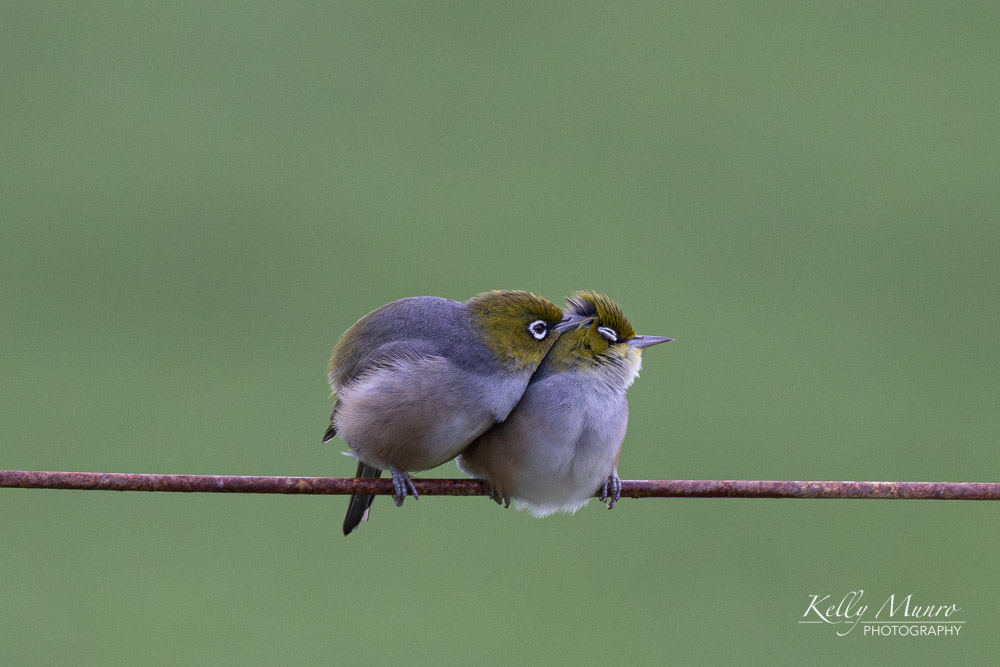
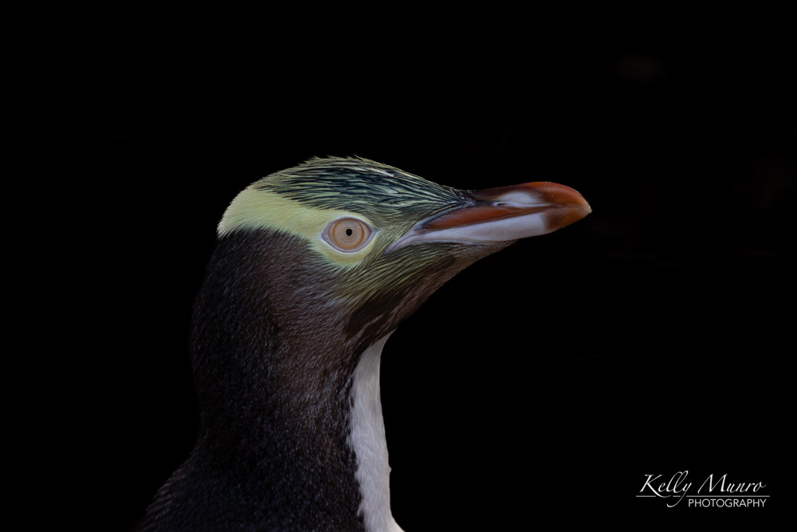
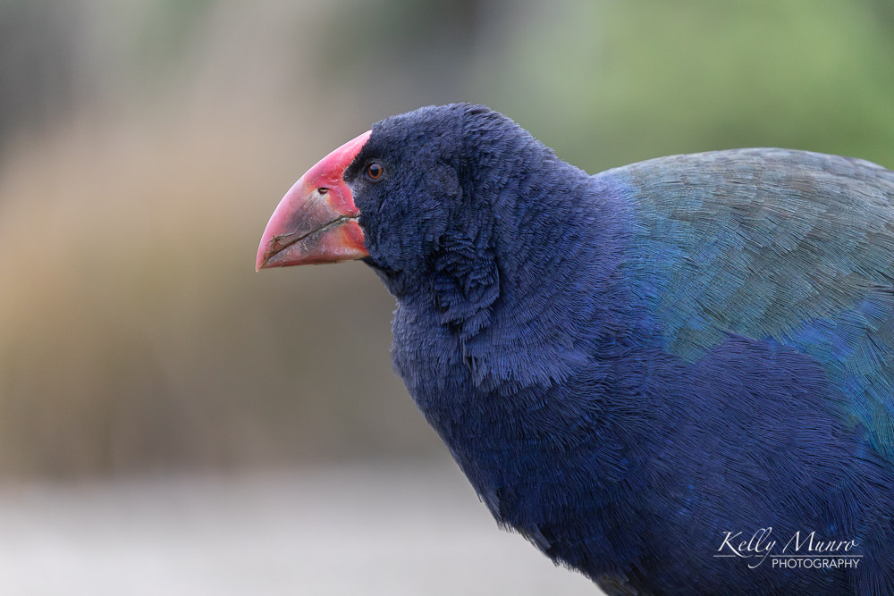
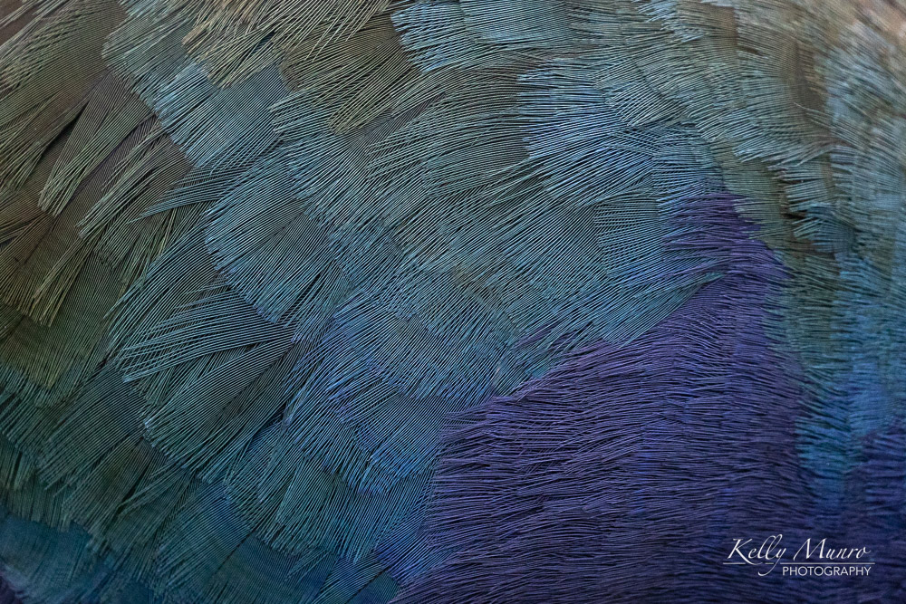
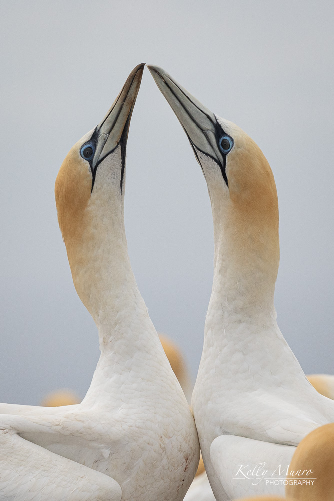
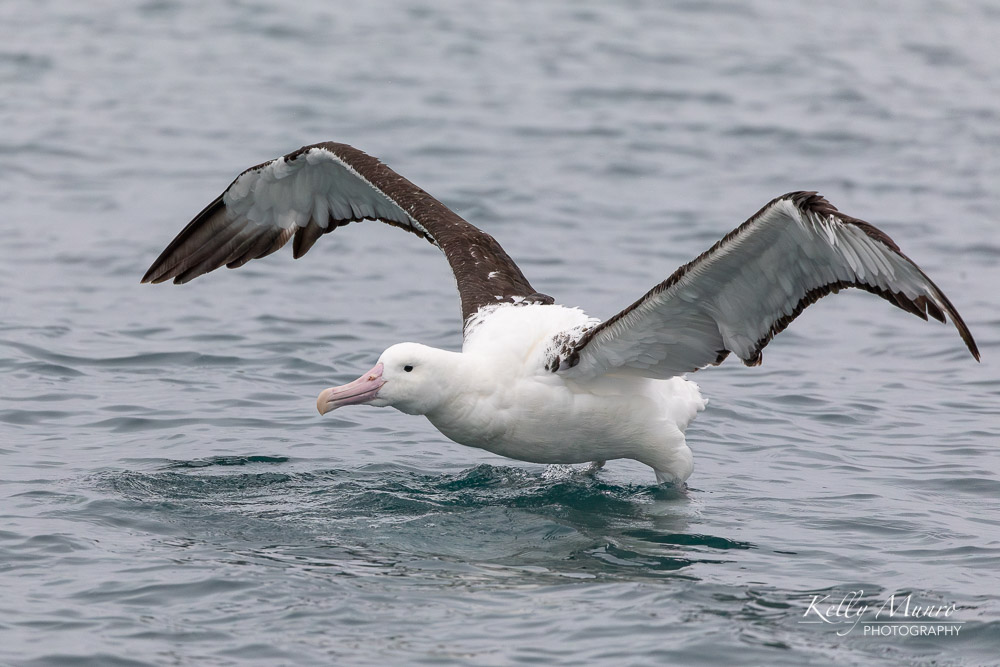

Silvereye Pair
Zosterops lateralis

Yellow-eyed Penguin
Megadyptes antipodes

South Island Takahe
Porphyrio hochstetteri

Takahe Feather Detail
Porphyrio hochstetteri

Australasian Gannet Pair
Morus serrator

Northern Royal Albatross
Diomedea sanfordi